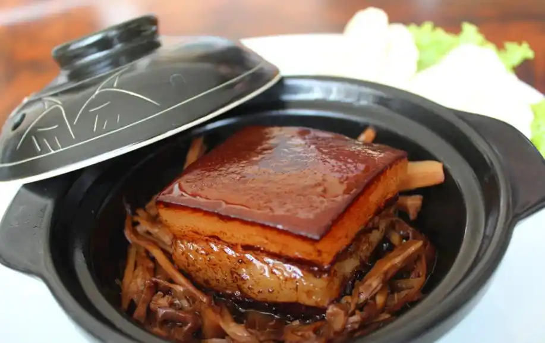

杭帮菜经典头牌 | 江南文人名菜 | 浙江省级非遗

东坡肉是杭帮菜经典头牌、江南文人名菜，以北宋文豪苏轼（号东坡居士）命名，距今近千年历史，1956 年入选杭州 36 道名菜，楼外楼焖制东坡肉技艺为浙江省级非遗，是游览西湖必尝特色菜。
黄州始创，留下秘方
苏轼被贬黄州时，当地猪肉价廉，他摸索出独特焖肉方法，写下《猪肉颂》：慢着火，少着水，火候足时他自美，奠定东坡肉核心烹饪思路。
杭州定型，广为流传
元祐四年苏轼任杭州知州，主持疏浚西湖、修筑苏堤，百姓感念他勤政爱民，春节送来大量猪肉。苏轼吩咐家人把肉切块、配酒送给修湖民工；家人误将 "连酒一起送" 理解为 "连酒一起烧"，以绍兴黄酒代替清水焖煮，成品醇香软糯、风味绝佳，百姓争相效仿，取名 "东坡肉" 流传至今。
主料优选金华两头乌三层带皮五花肉，肥瘦层次均匀，切成 4-5 厘米方正大块，形似麻将；辅料只用绍兴加饭酒、冰糖、本地酱油、葱姜，极少香料，不掩盖肉本身鲜香。
以酒代水：全程不加清水，依靠黄酒焖炖，去腥解腻，增添温润酒香；
砂锅慢焖：锅底铺葱姜防粘，肉皮朝下小火焖煮 2 小时以上，中途翻面，肉质酥烂不散；
文火收汁：依靠冰糖、酱油上色，汤汁浓稠透亮，牢牢挂在肉块表面。
外观：肉块方整，表皮红亮油润如琥珀，色泽醇厚；
口感：皮糯胶质丰富，肥肉入口即化、油脂完全析出，瘦肉酥烂不柴，酥烂而形不碎，香糯而不腻口；
口味：咸甜平衡，酱香融合黄酒清香，回味甘甜，汤汁拌饭尤为美味。
东坡肉不只是一道肉食，更是代表苏轼豁达淡泊、体恤百姓的文人饮食符号。它将西湖治水的民间故事与烹饪技艺结合，是西湖饮食文化、宋代文人生活美学的典型代表。